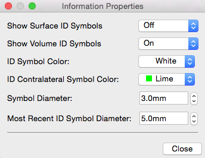

Properties
Properties, within the Information Window,
contains display settings for the Identification symbols.
- ID Symbol Color:
sets color of ID symbols that appear on the surface upon
location identification (left click on surface or volume in the
Viewing
Area).
- ID Contralateral Symbol Color:
sets the color of contralateral ID location symbols displayed
when Contra ID is active.
- Symbol Diameter: sets the size of
the ID symbols that appear on the surface, except the most
recently identified location.
- Most Recent ID Symbol Diameter: sets
the size of the most recently identified location. The default
is a setting to a size slightly larger than the Symbol
Diameter to distinguish the current location from previously
identified locations.
